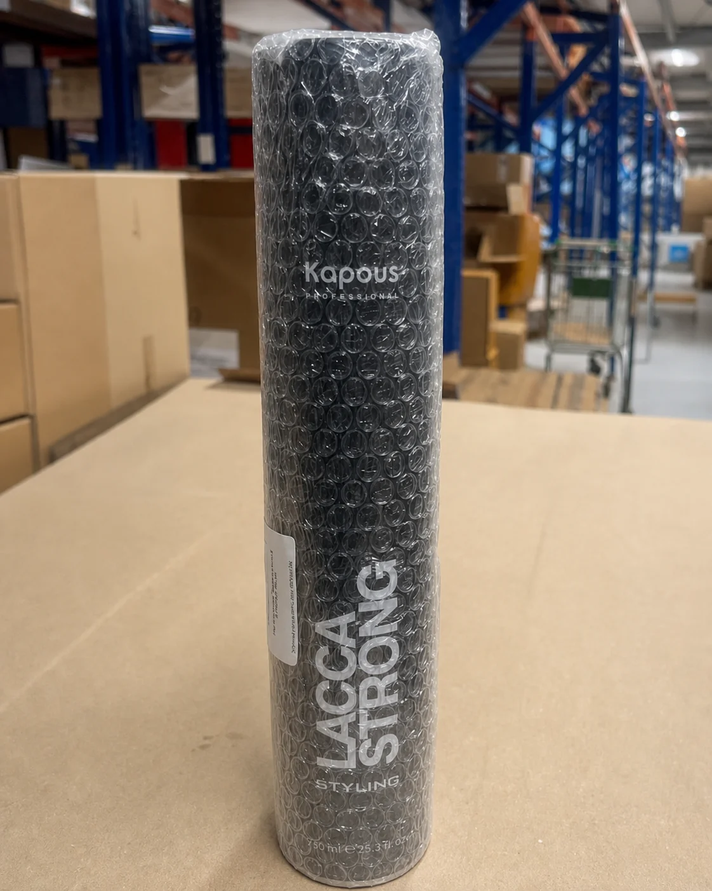
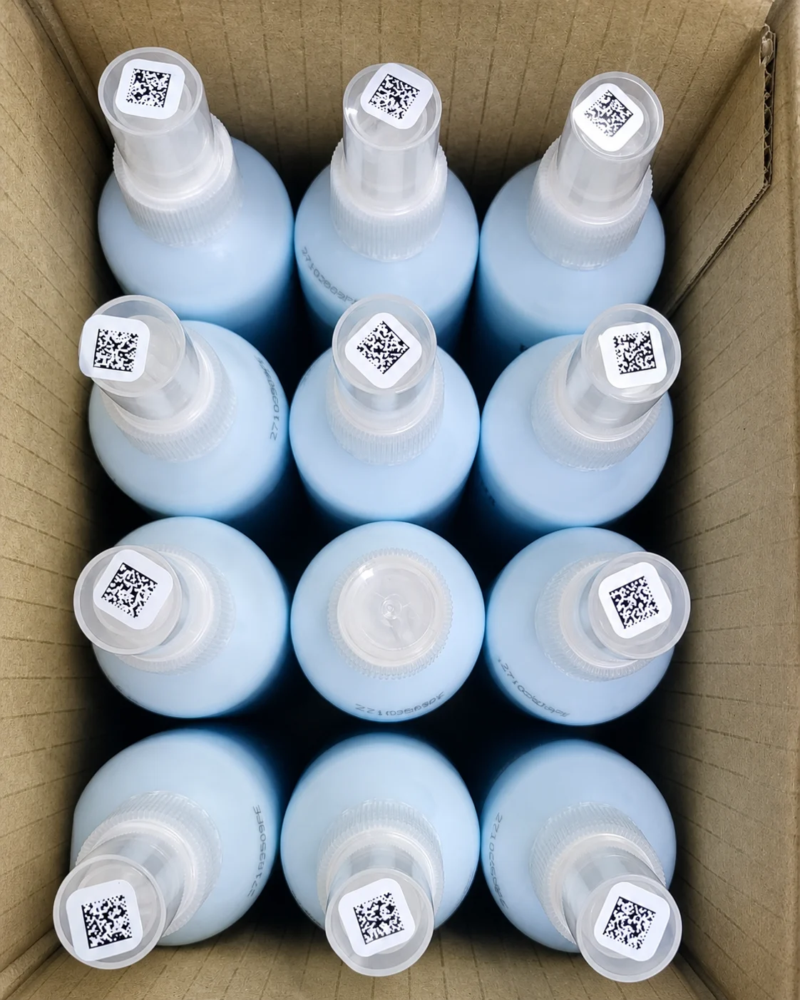
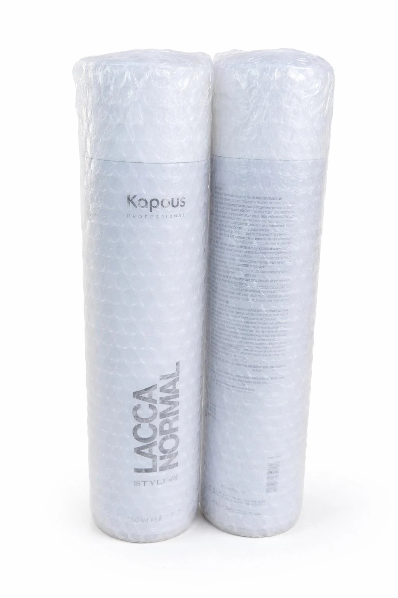

Фулфилмент косметики в Москве
Фулфилмент для косметики для Wildberries и Ozon
Опубликовано: 22 августа 2026 · Восстановлено: 4 ноября 2026
Преп-Центр принимает и готовит косметику к продаже на Wildberries и Ozon: проверяет товар и упаковку, сортирует по SKU, упаковывает, наносит маркировку, работает с Честным знаком при необходимости и формирует поставки FBO и FBS.
Работаем с шампунями и средствами для волос, кремами, сыворотками, масками, косметическими наборами и другими товарами категории красоты и ухода.
- Приемка и сортировка по SKU
- Проверка упаковки и видимых повреждений
- Воздушно-пузырьковая пленка (ВПП) и другие варианты защитной упаковки
- Этикетки Wildberries и Ozon
- Работа с готовыми КИЗ «Честного знака» при необходимости
- FBO и FBS
- Реальные кейсы крупных партий
Какую косметику готовим к маркетплейсам
Преп-Центр работает с косметикой и товарами для ухода в разной таре и упаковке. Перед запуском партии учитываем свойства товара, материал упаковки, требования к маркировке и схему поставки.
- шампуни и средства для волос;
- кремы и сыворотки;
- маски и уходовые средства;
- косметика в банках и флаконах.
- товары с дозаторами и распылителями;
- краски для волос;
- косметические наборы;
- товары в индивидуальных картонных коробках.
Для нестандартной тары, аэрозолей и продукции с особыми условиями хранения возможность приемки предварительно согласовывается.
Что можем сделать с партией
Приемка и пересчет
- разгрузка;
- приемка по грузоместам или поштучно;
- пересчет;
- распределение по SKU;
- разделение по партиям, оттенкам и другим характеристикам при необходимости.
Проверка
По согласованному регламенту можно проверить:
- состояние внешней упаковки;
- флаконы, крышки и дозаторы;
- видимые следы протекания;
- повреждения коробок;
- комплектность;
- сроки годности и партии, если это входит в задание.
Упаковка
В зависимости от товара используем:
- ВПП;
- термоусадочную пленку, если она подходит конкретной продукции;
- пакеты и короба;
- дополнительную фиксацию товара;
- упаковку наборов.
Маркировка
- печать и нанесение штрихкодов и этикеток маркетплейсов;
- этикетки SKU;
- транспортная маркировка;
- работа с кодами Честного знака при необходимости.
Комплектация
Можно собирать наборы, вкладывать:
- инструкции;
- информационные материалы;
- дополнительные товары;
- элементы подарочных наборов.
FBO и FBS
Подготовка поставок для Wildberries и Ozon:
- формирование коробов и паллет;
- маркировка грузовых мест;
- подготовка поставок FBO;
- обработка заказов FBS в рамках действующих условий Преп-Центра.
Что учитываем при работе с жидкой косметикой
Для шампуней, средств во флаконах и другой жидкой косметики особенно важны состояние тары и защитная упаковка.
До упаковки можно проверить:
- плотность закрытия крышки;
- состояние дозатора;
- целостность флакона;
- наличие видимых следов протекания.
Если товар требует ВПП, защитная упаковка должна снижать риск повреждения флакона при транспортировке. В зависимости от задачи может потребоваться дополнительная фиксация крышки или другой вариант упаковки.

Честный знак для косметики
Если товар подлежит обязательной маркировке, Преп-Центр может работать с предоставленными клиентом кодами Честного знака.
Конкретный процесс зависит от задания. В него могут входить:
- получение или считывание исходного Data Matrix;
- печать кода;
- нанесение маркировки;
- дублирование кода на внешний слой упаковки, если исходный код после упаковки становится недоступен;
- контрольное сканирование.
Клиент должен предоставить корректные исходные данные и коды.
Посмотреть, как это делали на реальной партии из 8 400 единиц →
Реальный кейс: 8 400 единиц косметики за 2 дня
В мае 2026 года Преп-Центр получил 8 400 единиц профессиональной косметики для волос на 7 паллетах:
- 4 200 шампуней;
- 2 200 аэрозольных лаков;
- 2 000 красок для волос;
- 14 SKU.
Партия готовилась для FBO-поставок на Wildberries и Ozon.
На входном контроле нашли 55 проблемных единиц. На 12 флаконах исправили неплотно закрытые крышки, 43 поврежденные единицы исключили из поставки.
Поставки были приняты без замечаний к упаковке и маркировке.


Сколько стоит фулфилмент косметики
Минимальная стоимость отдельной складской операции — от 5 ₽ за единицу.
Итоговая стоимость зависит от:
- объема партии;
- количества SKU;
- набора операций;
- типа тары;
- расходных материалов;
- требований к маркировке;
- схемы FBO/FBS;
- срочности.
Стоимость указана без НДС.
Что уже есть для работы с косметикой
Склад и оборудование
- склад Преп-Центра — 1 560 м²;
- производительность — до 20 000 единиц за 12-часовую смену в зависимости от операций и партии;
- автоматическая линия упаковки в ВПП — до 1 000 изделий в час.
Операции и поставки
- работа с Wildberries и Ozon;
- FBO и FBS;
- маркировка и Честный знак;
- реальные кейсы с косметикой и товарами во флаконах.
Вопросы о фулфилменте косметики
Как правильно упаковать косметику для Wildberries?
Упаковка зависит от товара и требований маркетплейса. Для флаконов сначала проверяют тару, крышки и дозаторы. При необходимости используют ВПП, термоусадочную пленку или короб. Штрихкод должен оставаться доступным для сканирования.
Вы работаете с косметикой, которая маркируется в системе Честный знак?
Да, Преп-Центр может выполнять операции с кодами Честного знака при наличии корректных кодов и задания от клиента: печать, нанесение, дублирование на внешний слой упаковки и контрольное сканирование.
Можно ли подготовить косметику сразу для Wildberries и Ozon?
Да. Партия может быть принята и обработана на одном складе, после чего товар разделяется и формируются отдельные поставки для каждого маркетплейса.
Работаете ли вы с шампунями и другой жидкой косметикой?
Да. Перед упаковкой можно проверить состояние флаконов, крышек и дозаторов, а также видимые следы протекания. Вариант защитной упаковки подбирается под конкретный товар.
Собираете ли вы косметические наборы?
Да. Можно комплектовать наборы из нескольких товаров и вкладышей, проверять комплектность, упаковывать и маркировать готовый набор.
Сколько стоит фулфилмент косметики?
Минимальная стоимость отдельной складской операции начинается от 5 ₽ за единицу. Итог зависит от объема, материалов и списка операций. Для точного расчета нужно передать данные о товаре и партии.
Как быстро можно обработать крупную партию косметики?
Срок рассчитывается по конкретному заданию. Например, в мае 2026 года Преп-Центр подготовил 8 357 пригодных единиц из партии 8 400 единиц за 2 рабочих дня. Это фактический кейс, а не универсальный срок для любой партии.
Фулфилмент для жидких товаров: приемка, проверка тары, защита от протечек, упаковка и маркировка.
Рассчитаем подготовку вашей партии косметики
Пришлите:
- тип товара;
- фотографии;
- количество единиц;
- число SKU;
- маркетплейс;
- список нужных операций.
Преп-Центр рассчитает стоимость приемки, упаковки, маркировки и подготовки поставки.
Рассчитать стоимость